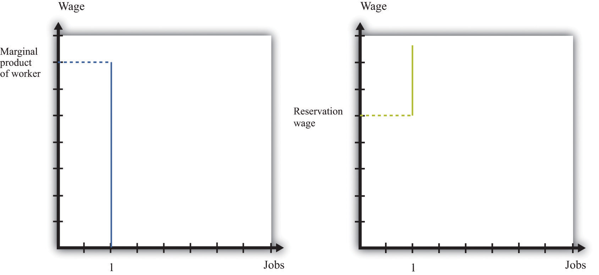

As we have seen, job creation and destruction occur because of the entry and exit of firms. Jobs are created when firms enter into an industry and destroyed when firms exit. Job creation and destruction also arise as a result of the hiring and firing decisions of existing firms. We have used the labor market as a device to help us understand these hiring and firing decisions.
If you have ever looked for a job, though, then you know there is more to the labor market than supply and demand. Several aspects of the way labor is traded do not fit neatly into this framework. Workers and firms devote time and money to finding one another: search is an important element of the job market. And wages are often determined by some type of bargaining process, perhaps between a single worker and a firm or between a firm and a union that represents many workers.
Internet job searches are now an established part of the way labor markets operate. If you are a worker looking for a job, you can go to a site like Monster.com (http://www.monster.com) or CareerBuilder.com (http://www.CareerBuilder.com) to search for vacancies posted by firms.The Department of Labor sponsors a website (http://www.careeronestop.org) filled with information, including compensation levels, for different occupations. Help with job search is available here as well. When you search on one of these sites, you are asked to provide information about the type of job you are looking for by providing the following:
In addition, you provide information about yourself, such as your work experience and education level. The search engine then provides a list of vacancies posted by firms matching these characteristics.
If there are potential matches for you, you are provided with a list of potential employers. Each will typically provide some information about the job. Sometimes this will include a salary range. These postings often include a description of the type of worker the firm is searching for, using phrases such as “team player,” “responsible,” “leadership skills,” or “people skills.” The next step is then up to you. Along with the job postings comes information about how to contact the firm. You can indicate your interest to the firm, and you may be called in for an interview. If that goes well, a job offer will follow. At this point, negotiation over compensation comes into play.
Eventually, you must decide whether or not to accept the job. What should you do? If you knew for sure that this was your dream job of a lifetime, the decision would be obvious: accept the job. But life is never that easy. In reality, you face considerable uncertainty over any job you are offered:
The first type of uncertainty has multiple dimensions. No matter how many brochures you read about a job, how many other workers you talk to, or how much time you spend watching someone at work, you still will not know everything about a job until you actually go to work. Even then, there are elements of a job that you will not know about until you have worked for many years. An example is promotion. When you consider a job, you will probably hear about opportunities for advancement if you stay with the firm. But whether or not you will be promoted is something that will be resolved in the future and is part of the uncertainty you face when you think about accepting a job.
The second type of uncertainty concerns the alternatives to the job you are considering. If you had a list of all possible jobs available to you, then you could consult that list and pick the best job. But, of course, there is no such list. Instead of being presented with a list, you have to search for a job. If you turn down the job you are offered today, you will not know for sure what job will be available to you tomorrow. Uncertainty over how to respond to a job offer is very important for some workers but less so for others. The difference is determined by how easy it is to change jobs. We can illustrate the point with two extreme examples.
The first case is a job that offers lifetime employment. If you accept this job, it is yours forever. You will never be fired and—let us suppose—you can never quit either. Given this situation and faced with a job offer, what would you do? Presumably the first thought that comes to your mind is “be careful.” You would not accept this job unless you were very sure it was a good match for you. If you are not sure, you should reject the job offer and search more.
The second case is a job that offers very short-term employment, on a week-by-week basis. If you accept this job, you are employed for the week; then you can choose to remain in the job (if it is still available) or leave to search for another one. Also, suppose that during your work time you can still keep an eye out for other jobs. It might be that you can check a computer that displays job ads, look at classified ads in the newspaper, or pass by a few shops advertising job openings during lunch. If you are offered this second type of job, there is no need to be very selective. Your employment is very temporary, and it is easy to change jobs.
The first kind of job is more descriptive of professional positions available to highly skilled workers, where employers are very selective about the type of person they hire. For these types of individuals, searching and changing jobs can be very lengthy and expensive. If they accept a job, it had better be right for them. The second kind of job is one you might be more familiar with as a student—a short-term job such as waiting tables, working as a secretarial temp, or selling in a retail outlet.
The existence of Monster.com and similar search engines makes clear that the trade of labor services is quite different from the trade of, say, US government bonds. The return on a bond is the same regardless of who owns it. But the match between a firm and a worker is special. No two jobs are the same, and no two workers are the same. Also, if you want to buy a US government bond, you can simply call a broker to buy one for you. But if you run a restaurant and want to hire a worker with some very special skills in a particular location, there is no obvious person to call or place to go.
There are three stages of search and bargaining:
These three elements correspond to the stages you might encounter when you look for a job. First, there is time spent looking for job opportunities. This might involve a recruiting program or search on the Internet. Once you have found a job opening, there is normally a second stage: an interview process. You will typically be interested in the characteristics of the job (such as wages, hours, benefits, promotion possibilities, and job security), and the firm will be interested in your characteristics (such as skills, experience, and trustworthiness). If both you and the firm think that the match is a good one, then the process moves to a third and final stage of bargaining to determine the compensation you will receive.
We suppose that the bargaining process between a worker and a firm is very simple. The firm makes a take-it-or-leave-it offer. In other words, the firm gives the terms of its offer, including the compensation package and the working conditions, and the worker can then either accept or reject this offer. We also suppose that the offer can be summed up in terms of wages.
To see how this works, imagine that there are two firms each offering jobs at $10 per hour. One firm provides very flexible working hours, while the other requires you to work from 10 p.m. to 6 a.m. and sometimes on the weekend. The first job is evidently more desirable than the second one. If you would be willing to pay $4 an hour for the flexibility of the first job, then it is as if the second firm was offering a job at $6 per hour.
Once a worker has a wage offer in hand, should that person accept or reject it? The answer comes from balancing the benefits of having a job (and therefore a wage) right now versus waiting for another job to come along in the hope that it will pay a higher wage. To see how a worker would make this choice, here is a simple numerical example.
Suppose a worker gets a job offer of $1,000 per week. Then the decision is easy: accept that job. The more difficult case is when the worker gets an offer of $500 per week. By accepting this job, the worker gets $200 more than with unemployment insurance. But accepting the job also has an opportunity costWhat you must give up to carry out an action.. It means that the worker loses out on the chance of getting the higher paying job next week. So what should the worker do?
If you think about this problem, you will probably realize that the answer depends on how likely the worker is to get the better job by waiting. If most of the available jobs are the ones that pay $1,000 per week, then it is likely to be worth waiting. On the other hand, if most of the jobs pay only $500 a week, then the worker might have to wait a long time for the better job, so it is likely better to accept the one that pays $500 a week. More generally, in a world where there are lots of different jobs paying lots of different wages, the best thing for the worker to do is to pick something we call the reservation wageThe lowest wage that a searching worker will accept.. Workers can follow this rule:
If a worker and a firm meet and determine that the match is good, then they proceed to determine wages. There are two ways in which this might happen.If you read Chapter 6 "eBay and craigslist", you will see some close parallels between the mechanisms we discuss here and the ways in which a buyer and a seller may agree on a price. One possibility is the one we just discussed. Firms post vacant jobs and at the same time advertise the wage. If a worker qualifies for the job, then that worker will accept the job if the wage exceeds the reservation wage.
There can also be bargaining between a worker and a firm. A firm will make a profit based on the difference between the marginal product of hiring the extra worker and wages paid to the worker. So a firm will choose to hire the worker as long as the wage is below the marginal product of labor. This is a firm’s valuation of the job. A worker will be willing to take a job as long as the wage exceeds the reservation wage. This is a worker’s valuation of the job. In Figure 9.16 "The Valuation of a Job" we show both.
Figure 9.16 The Valuation of a Job
A firm follows the decision rule: “Offer the job if a worker’s marginal product exceeds the wage.” A worker follows the decision rule: “Accept the job if the wage exceeds the reservation wage.”
As long as the marginal product of labor for a worker is higher than a worker’s reservation wage, there is something to gain by employing a worker. The match is potentially a good one. But how will these gains be split? The answer depends on the relative bargaining power of a worker and a firm, which in turn depends on the information that they each possess.
As an example, suppose that a firm knows a worker’s reservation wage and can make a take-it-or-leave-it offer. It would then offer a real wage slightly above the worker’s reservation wage. The worker would accept the job, and all the surplus from the employment relationship would flow to the firm. At the other extreme, suppose that a worker knows his marginal product at the firm, so the worker can make a take-it-or-leave-it offer. Then the worker will offer to work at a real wage slightly below his marginal product. The firm would accept the offer, and all the surplus of the employment relationship would flow to the worker.
Another source of bargaining power for a worker is the other options available to him. If a worker comes into a negotiation with a good job offer from another firm in hand, then this will increase his reservation wage.
Workers can also enhance their bargaining power by negotiating together. Firms typically have many workers. Sometimes these workers group together, form a union, and bargain jointly with a firm. When workers organize in this way, they generally have more bargaining power because they can threaten to strike and shut down the firm. In this way, unionized workers get more of the surplus from their jobs.
In reality, workers don’t know their exact marginal product and firms don’t know the exact reservation wage of their workers. Not surprisingly, bargaining in such situations is more complicated to analyze. Sometimes, gains from trade are not realized. Suppose, for example, that a worker’s reservation wage is below his marginal product. But a firm, thinking that a worker’s reservation wage is really low, makes the worker a very low wage offer. If this wage offer is below the worker’s reservation wage, then the worker will decline the offer and search again—despite the fact that there were gains to trade. Unfortunately, private information prevented the firm and the worker from realizing these gains.
The final element in the search process is the vacancies posted by firms. You can see these vacancies on Monster.com, in the newspaper, and in magazines. Vacancies are costly to post, and it is expensive to evaluate workers. They are the analogy on a firm’s side to the costly search on a worker’s side.
You can think of a firm’s decision of posting vacancies as being very similar to the labor demand for a firm. Firms want to expand output and thus post more vacancies whenever the marginal revenue of selling an extra unit of output increases relative to marginal cost. This could happen, for example, if the demand curve faced by a firm shifts outward. To expand output, the firm needs to hire more workers. It does so by posting vacancies, interviewing workers, and eventually bargaining with the best qualified ones to fill the open positions.
We noted earlier that labor demand also depends on wages: as the real wage decreases, a firm’s real marginal cost decreases, so it will want to hire more workers and expand output. When we think of search and bargaining, say through Monster.com, there is no “market wage” that a firm takes as given. Instead, the wage comes from a bargain between a worker and the firm. But the wage that is eventually agreed on will depend on the outside options of workers and firms. As the prevailing wage in the market decreases, a firm will be able to hire workers at a lower wage and will choose to post more vacancies and expand its workforce.